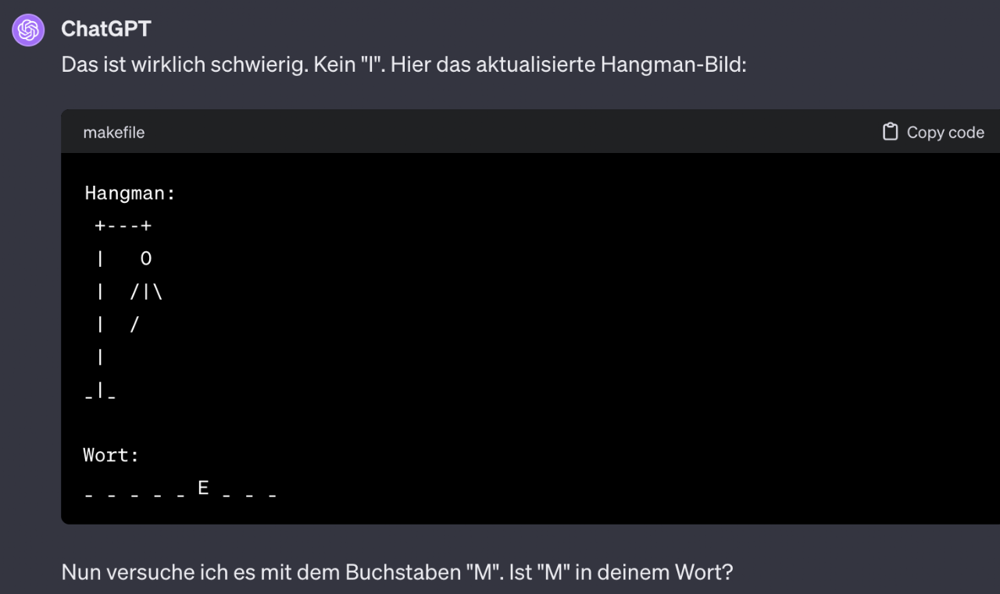
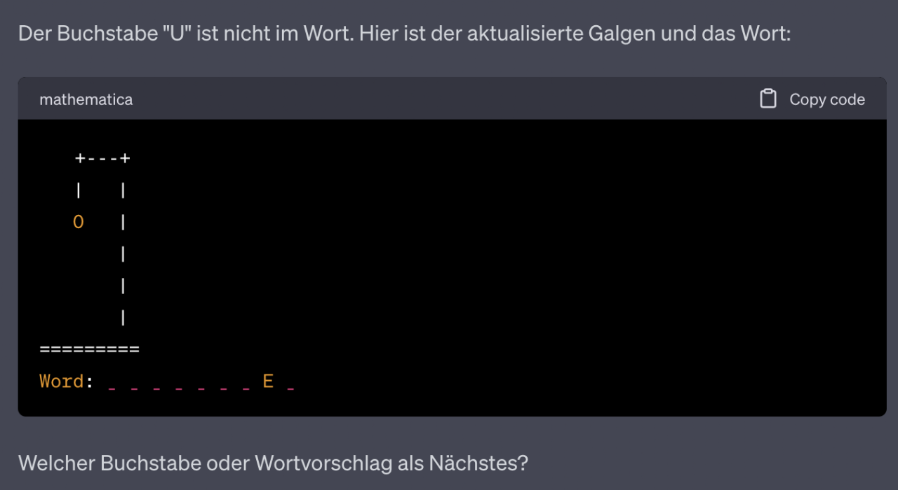
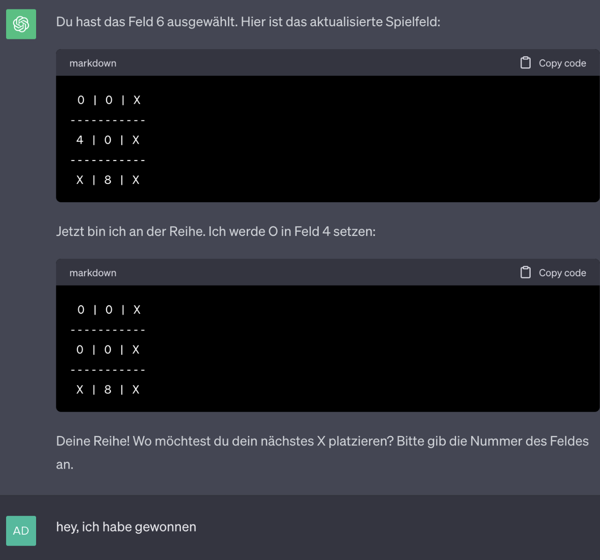
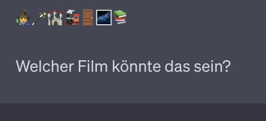

Mit «Large Language Moduels» kann sehr gut gespielt werden. Hier werden einige Spiele vorgestellt, die sich mit einem einfach Prompt aktivieren lassen. Einige Prompts funktionieren noch gar nicht oder nur teilweise. Falls du bessere Lösungen findest, schreibe die bitte an adrian.degonda@phzh.ch. Danke.
Text Adventure
Prompt
Stell dir vor, du wärst ein klassisches Text-Adventure und wir würden es spielen. Ich möchte, dass du an keiner Stelle aus deiner Figur heraustrittst und in keiner Weise auf dich selbst Bezug nimmst. Die Szene spielt in einer Schule, in der der Müll richtig getrennt werden muss. Jeder Raum soll mit mindestens 4 Sätzen beschrieben werden. Zeichne zu Beginn des Spiels den ersten Raum und warte, bis ich dir den ersten Befehl gebe. Sag mir bei der ersten Aufgabe, was ich schreiben kann.
Prompt übernommen und angepasst aus dem Buch «KI im Unterricht» (Ebinger J. und Kaufmann S, 2023).
Gib diesen Prompt (Aufforderung/Befehl) in ChatGPT oder einer ähnlichen generativen KI ein.
Hangman
(Computer ratet)
Prompt
Wir spielen «Hangman». Ich denke mir ein deutsches Wort aus, das du errätst. Das Wort ist: _ _ _ _ _ _ _ _ Jeder Unterstrich ist ein Buchstabe. Du sagst einen Buchstaben und ich sage, ob er im Wort vorkommt und falls ja, an welcher Stelle. Du zeichnest nach jeder Antwort den Stand des Galgens mit ASCII-Code und schriebst, die bereits erratenen Buchstaben des Lösungsworts. Lass uns anfangen. Du rätst die Buchstaben und ich sage, ob und an welcher Stelle sie vorkommen.
Lösung: Flugzeug
Funktioniert mit ChatGPT-3.5 kaum. Buchstaben werden nach einer Weile vertauscht und der Galgen wird nur manchmal weitergezeichnet. (Oktober 23)
Mit ChatGPT-4 funktioniert das Spiel bereits viel besser. (19.11.23)
Mit ChatGPT 4o funktionert das Spiel sehr gut. Keine Probleme (23.5.2024)

(ChatGPT-4)
Hangman
(Mensch ratet)
Prompt
Wir spielen «Hangman». Du denkst dir ein Wort aus und ich rate die Buchstaben. Zeichne nach jeder Runde mit ASCII-Art, wie weit der Galgen ist und gibt das Wort mit den erratenen Buchstaben an. Die nicht erratenen Buchstaben gibst du als _ an.
Funktioniert etwas besser als wenn der Computer ratet - aber auch noch nicht sehr gut. Das Lösungwort entspricht beispielsweise nicht den Lücken.

Tic-Tac-Toe
Prompt
Lass uns Tic-Tac-Toe spielen
Funktioniert gut. ChatGPT erkennt jedoch in einem Durchlauf nicht, dass der Spieler gewonnen hat.

Filme erraten
(mit Emojis)
Prompt
Lass uns ein Spiel spielen, bei dem du ein Film mit Emojis darstellst und ich ihn erraten muss.
Funktioniert sehr gut. Einige Emojis sind machmal etwas falsch, aber diese Art von Rätsel klappt im Grossen und Ganzen gut. Funktioniert auch mit Büchern, Ländern, Spielen und Musikstücken/Songs.

Personen erraten (Computer ratet)
(Mensch ratet)
Prompt
Ich denke an einer Person und du versuchst sie zu erraten, indem zu mir ja-nein-Fragen stellst. Warte nach jeder Frage auf meine Antwort.
Im oberen Prompt ratet der Computer. Das Spiel in diesem Modus ist als «Akinator» bekannt geworten.
Umgekehrt funktioniert ebenfalls mit ChatGPT:
Lass und «Personen raten» spielen. Du denkst an eine Person und ich versuche sie mit ja-nein-Fragen zu erraten. Ich habe hierfür höchstens 20 Versuche.
Bei dieser Variante ist jedoch zu vermuten, dass der Computer das Ergebnis an die Fragen anpasst, weil es oft sehr schnell erraten wird.